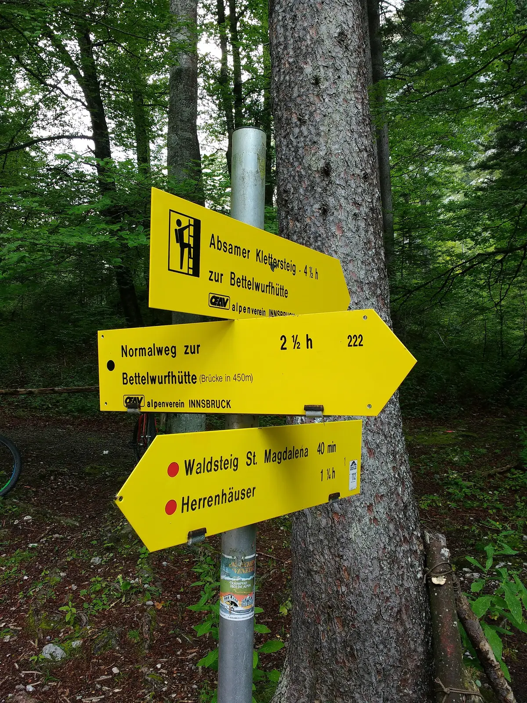
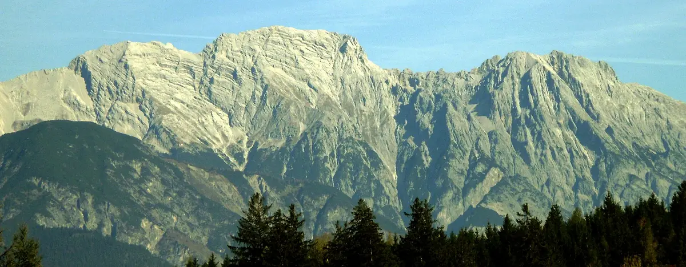
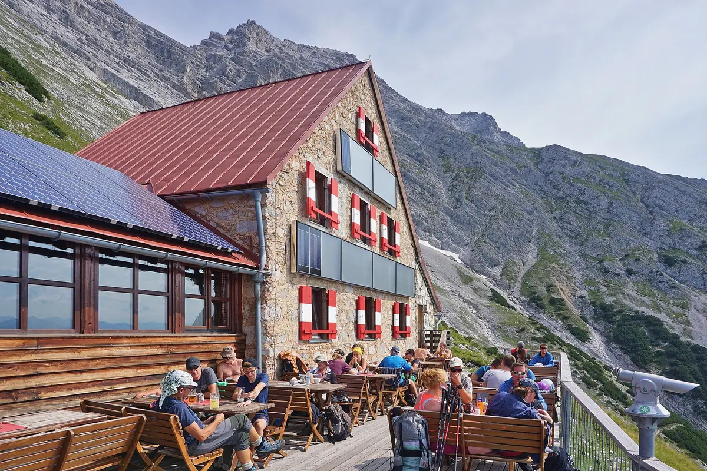
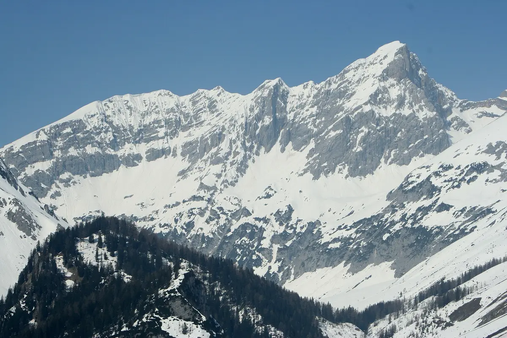
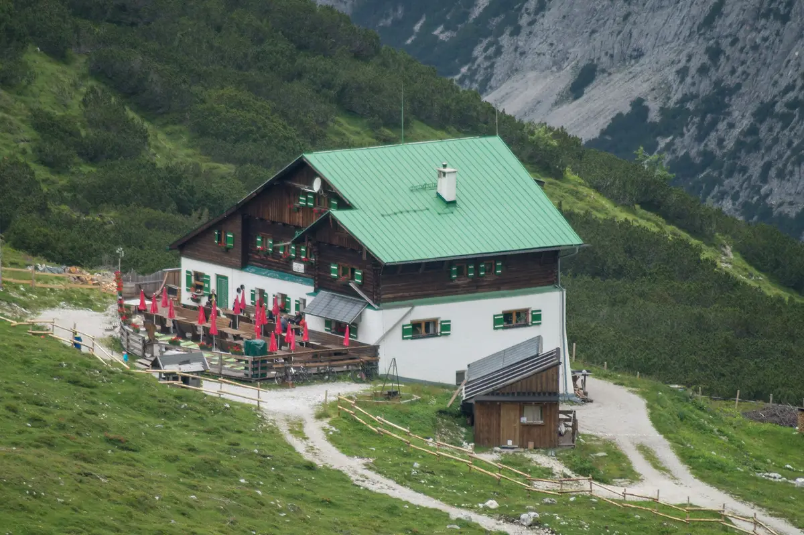
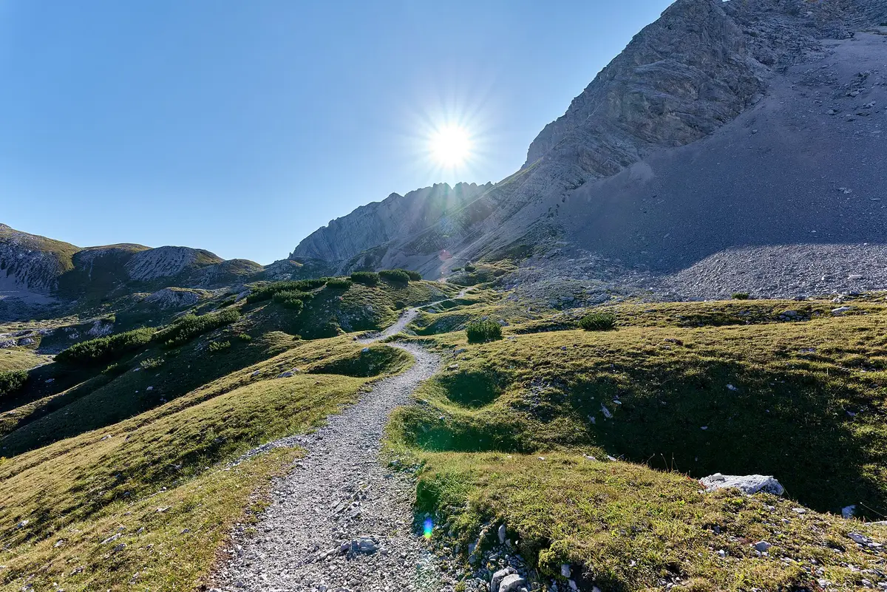
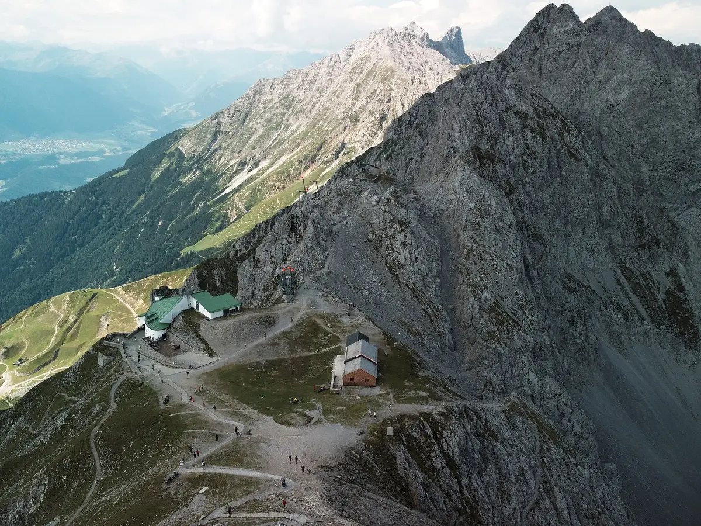

Karwendel
Summit: Großer Bettelwurf, 2726 m
This option starts above Innsbruck on the Halltal side, uses Bettelwurfhütte for the summit day, crosses to Pfeishütte, and exits by the Goetheweg to Hafelekar. It is one of the lowest-hop access chains on the page when the direct Rotterdam to Innsbruck flight is running.
The good
- One of the shortest access chains on the page if the Innsbruck flight is available.
- Clear structure: approach hut, summit day, traverse day, ridge exit.
- Two distinct hut nights, rather than repeating the same hut twice.
The bad
- The summit day is more exposed than the Dolomites option.
- The route is less forgiving in wet conditions than the Rofan option.
- The return trip adds a cable-car leg because Day 4 finishes on the Nordkette ridge line.
Route map
- Day 1: Absam / Halltal to Bettelwurfhütte
- Day 2: Bettelwurfhütte loop via Großer Bettelwurf
- Day 3: Bettelwurfhütte to Pfeishütte
- Day 4: Pfeishütte to Hafelekar
Indicative line between named route points. Use official route descriptions or GPX for navigation.
Valley approach to the first hut
The first hiking day is a direct climb from the Halltal side to the hut used for the summit day.


Summit loop
This is the hardest part of the Karwendel option. It is the section that needs the cleanest weather and the steadiest footwork.
Summit clip
Short summit-focused clip on the last meters of Großer Bettelwurf. Focus: final rocks and summit marker. Length: 0:57.


Traverse across the range
This day changes the route from a summit base into a hut-to-hut traverse and keeps the exposure level high enough to feel like a real mountain transfer.


Ridge exit to the city side
The last day stays high and ends at the Nordkette mountain station rather than in a valley village.


Route video
Longer route video for the Großer Bettelwurf day and Karwendel ridge terrain. Length: 7:54.